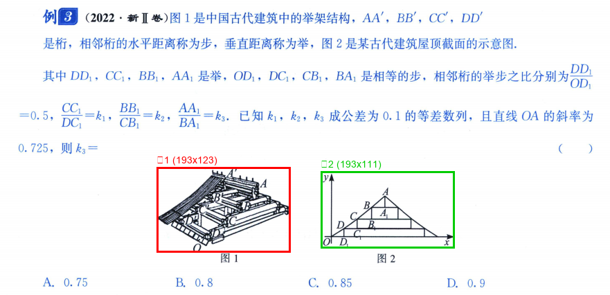
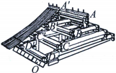
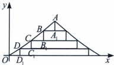

bbox: (226, 241, 419, 364)
size: 193 × 123 px

bbox: (463, 247, 656, 358)
size: 193 × 111 px
例3（2022·新Ⅱ卷）图1是中国古代建筑中的举架结构， $ AA^{\prime}, BB^{\prime}, CC^{\prime}, DD^{\prime} $
是桁，相邻桁的水平距离称为步，垂直距离称为举，图2是某古代建筑屋顶截面的示意图.
其中 $ DD_{1}, CC_{1}, BB_{1}, AA_{1} $是举， $ OD_{1}, DC_{1}, CB_{1}, BA_{1} $是相等的步，相邻桁的举步之比分别为 $ \frac{DD_{1}}{OD_{1}} $ $ = 0. 5, \frac{C C_{1}}{D C_{1}} = k_{1}, \frac{B B_{1}}{C B_{1}} = k_{2}, \frac{A A_{1}}{B A_{1}} = k_{3}. $已知 $ k_{1}, k_{2}, k_{3} $成公差为0.1的等差数列，且直线OA的斜率为0.725，则 $ k_{3} = $ （ ）
例3（2022·新Ⅱ卷）图1是中国古代建筑中的举架结构， $ AA^{\prime}, BB^{\prime}, CC^{\prime}, DD^{\prime} $
是桁，相邻桁的水平距离称为步，垂直距离称为举，图2是某古代建筑屋顶截面的示意图.
其中 $ DD_{1}, CC_{1}, BB_{1}, AA_{1} $是举， $ OD_{1}, DC_{1}, CB_{1}, BA_{1} $是相等的步，相邻桁的举步之比分别为 $ \frac{DD_{1}}{OD_{1}} $ $ = 0. 5, \frac{C C_{1}}{D C_{1}} = k_{1}, \frac{B B_{1}}{C B_{1}} = k_{2}, \frac{A A_{1}}{B A_{1}} = k_{3}. $已知 $ k_{1}, k_{2}, k_{3} $成公差为0.1的等差数列，且直线OA的斜率为0.725，则 $ k_{3} = $ （ ）

<div align="center">
图1
</div>

<div align="center">
图2
</div>
A. 0.75 B. 0.8 C. 0.85 D. 0.9
| 维度 | 旧方案（Vision Model） | 新方案（OCR Bbox） |
|---|---|---|
| 图像检测 | GLM-4V-Plus 坐标检测 ±10-20% 误差 | OCR layout_parsing 自带 bbox 像素级精确 |
| 额外 API 调用 | 需要（视觉模型 $$$） | 0（已含在 OCR 中） |
| 延迟 | +5-7s（视觉模型推理） | +0ms（解析已有数据） |
| 准确率 | ~80%（复杂布局下滑） | ~99%（OCR 引擎原生支持） |
| 实现复杂度 | 新增 Stage 1a + 1b | 仅修改 Stage 1 后处理 |